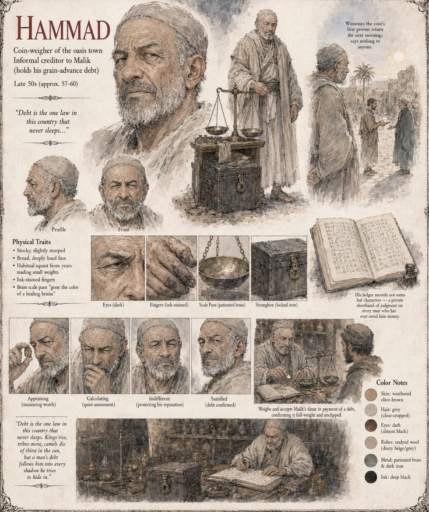

Hammad
Coin-weigher of the oasis town · informal creditor to Malik, holder of his grain advance · late fifties by his sheet
The coin-weigher of the oasis town, who keeps, in a ledger of his own devising, not sums but characters, so that a man's name in Hammad's book says less about what he owes than about what Hammad has already decided he is. He weighs on a scale whose brass pans have gone the color of a healing bruise and keeps his takings in a strongbox with an iron lock he trusts the way other men trust their own sons. To travelers he is fond of saying that debt is the one law in this country that never sleeps, because unlike every other law a man has ever broken, this one always calls it in, and always at compound interest, a joke he has made so many times he has stopped finding it funny, though never true.
When Malik comes to settle a grain advance from the previous winter, Hammad weighs the dinar, bites it, weighs it again against a standard he trusts more than he trusts most men, and pronounces it full-weight and unclipped. He gives Malik three coins of lesser value and strikes the debt from the ledger. The shepherd then keeps spending a coin he somehow still possesses, and Hammad says nothing about it to anyone, not from loyalty, since he is loyal to no one, a fact he considers his greatest professional asset, but because a coin-weigher who admits to being fooled by a shepherd will shortly have no customers left to fool, and he had done the arithmetic on his own reputation before he finished the arithmetic on Malik's coin. The silence does not hold. By the time the story has reached the date-market three wells east it is no longer about a shepherd but about the coin, and market children who have never seen it are calling it the Coin With No Grave. The manuscript sets beside his silence the silence of a caravan's chief factor, who finds himself a dinar short a province away and writes it off as his own mistake.
The sheet draws him in his late fifties, stocky and slightly stooped, with a broad, deeply lined face, a habitual squint from years of reading small weights, close-cropped grey hair, a short grey beard, dark almost-black eyes and weathered olive-brown skin, in undyed dusty-grey wool, with ink-stained fingers. Around him it sets patinated brass scale pans, a locked iron strongbox and an open ledger whose entries are characters, not sums, a private shorthand of judgment on every man who has ever owed him money; its expression panels run appraising, calculating, indifferent (protecting his reputation) and satisfied (debt confirmed). The age band, the ink-stained fingers and the sheet's note that he witnesses the coin's first proven return the next morning are the sheet's; the manuscript says only that he knew a shepherd kept spending a coin he somehow kept. The first sentence of the pull-quote is the manuscript's; the rest of it is the sheet's own and does not appear in the manuscript.
“Debt is the one law in this country that never sleeps. Kings rise, tribes move, camels die of thirst in the sun, but a man's debt follows him into every shadow he tries to hide in.”